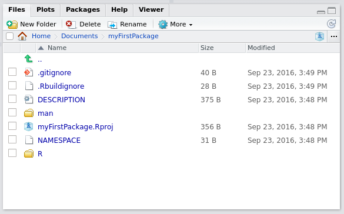

Chapter 5 Packages
5.1 Why you need your own packages in your life
One of the reasons you might have tried R in the first place is the abundance of packages. As I’m writing these lines (in August 2016), 8922 packages are available on CRAN. That’s almost over 9000. This is an absolutely crazy amount of packages! Chances are that if you want to do something, there’s a package for that (I’ll stop it here with the lame references, promise!).
So why the heck should you write your own packages? After all, with 8922 packages you’re sure to find something that suits your needs, right? No. Simply because the data sets that you’re working with are probably unique to your workplace or maybe what you want to do with them is unique to your needs. You won’t find a package that will take care of cleaning your data for you.
Ok, but is it necessary to write a package? Why not just write functions inside some scripts and then simply run these scripts? This seems like a valid solution at first. However, it quickly becomes tedious, especially if you have multiple scripts scattered around your computer or inside different subfolders. You’ll also have to write the documentation on separate files and these can easily get lost or become outdated.
Having everything inside a package takes care of these headaches for you. And code that is inside packages is very easy to test, especially if you’re using Rstudio. It also makes it possible to use the wonderful covr package, which tells you which lines in which functions are called by your tests. If some lines are missing, write tests that invoke them and increase the coverage of your tests!
As I mentioned in the introduction, if you want to learn much more than I’ll show about packages read Wickham (2014a). I will only show you the basics, but it should be enough to get you productive.
One last thing: if you don’t know git, you really should learn git. I won’t talk about it here, because there’s a ton of books on git, such as Silverman (2013). I learned by reading it and googling whenever I had a problem. Learning git is really worth it, especially if you’re collaborating with some colleagues on your packages.
5.2 R packages: the basics
To start writing a package, the easiest way is to load up Rstudio and start a new project, under the File menu. If you’re starting from scratch, just choose the first option, New Directory and then R package. Give a new to your package, for example myFirstPackage and you can also choose to use git for version control. Now if you check the folder where you chose to save your package, you will see a folder with the same name as your package, and inside this folder a lot of new files and other folders. The most important folder for now is the R folder. This is the folder that will hold your .R source code files. You can also see these files and folders inside the Files panel from within Rstudio. Rstudio will also have hello.R opened, which is a single demo source file inside the R folder. You can get rid of this file.

The picture above shows the basic structure of your package. As a first step, create a script called square_root_loop.R and put the following code in it:
sqrt_newton <- function(a, init, eps = 0.01, iter = 100){
stopifnot(a >= 0)
i <- 1
while(abs(init**2 - a) > eps){
init <- 1/2 *(init + a/init)
i <- i + 1
if(i > iter) stop("Maximum number of iterations reached")
}
return(init)
}Then save this script. You can now test your package by building your package, either by clicking on the button named Build and Reload button which you can find inside the Build pane or by using the following keyboard shortcut: CTRL-SHIFT-B. You will use Build and Reload quite often, so I advise you remember this shortcut! In the next section we will see how we can add documentation to our functions.
5.3 Writing documentation for your functions
Writing documentation for your functions is very streamlined, thanks to the roxygen2 package. Suppose we want to write documentation for our square root function:
sqrt_newton <- function(a, init, eps = 0.01, iter = 100){
stopifnot(a >= 0)
i <- 1
while(abs(init**2 - a) > eps){
init <- 1/2 *(init + a/init)
i <- i + 1
if(i > iter) stop("Maximum number of iterations reached")
}
return(init)
}Usually, you would write comments to describe what your function does, what are its inputs and outputs. ‘roxygen2’ is a package that turns these comments into documentation. Here is what our function would look like with roxygen2 type comments:
#' Function to compute the square root of a number
#' @param a the number whose square root is computed
#' @param init an initial guess
#' @param eps *optional* the precision. Default value: 0.01
#' @param iter *optional* the number of iteration. Default value: 100
#' @description This function computes the square root of a number using a loop.
#' @export
sqrt_newton <- function(a, init, eps = 0.01, iter = 100){
stopifnot(a >= 0)
i <- 1
while(abs(init**2 - a) > eps){
init <- 1/2 *(init + a/init)
i <- i + 1
if(i > iter) stop("Maximum number of iterations reached")
}
return(init)
}The first difference with standard comments is that roxygen2 type comments start with the #' symbol instead of simply the # symbol. Then, after #' you can supply different keywords such as @param, @description, @export. These keywords are then used by the roxygenise() function from the roxygen package to create the documentation files inside your package. Before roxygen, these documentation files were written in the .Rd format by hand. Now these files get created automagically by simply formatting your comments with this specific syntax and then running
roxygen2::roxygenise()in the command prompt. Try it, you should see the following in the command prompt:
Writing sqrt_newton.Rdthen you can Build and Reload your package again using CTRL-SHIFT-B. If you go check the documentation of your function inside your package, this is what you should see:

There is still a keyword that I did not mention: the @export keyword. This keyword is needed if you want your function to be accessible by the user without prepending the package name, like this:
my_package::my_functionNot using @export can be useful though, if you want to have helper functions that are used by your other functions inside your package, and if you wish to not make these functions accessible to the users.
5.4 Unit test your package
Now that we know the basics of creating a package, we move on to unit testing your package. Unit testing is very useful, but require some work, especially because you have to run them often to make them truly worth your time. However running them often can be painful because you have to be careful with the current working directory. The simplest way to do unit testing is to put your functions inside a package and write unit tests for these functions and use Rstudio’s keyboard shortcuts to run your tests. First of all, create a folder called tests in the root of your package and inside this tests folder create another folder, called testthat. The testthat folder will hold your unit tests. Inside the tests folder, create a script called test_sqrt_newton.R and put the following code in it:
library("testthat")
library("myFirstPackage")
test_that("Test sqrt_newton: positive numeric",{
eps <- 0.001
expected <- 2
actual <- sqrt_newton(4, 1, eps = eps)
expect_lt(abs(expected - actual), eps)
})Save this file and use the following keyboard shortcut: CTRL-SHIFT-T to run your unit test. You will see the following output:
==> devtools::test()
Loading myFirstPackage
Loading required package: testthat
Testing myFirstPackage
.
DONE ===========================================================================You can of course add more unit tests inside the same file. Add the following code to test_sqrt_newton.R:
test_that("Test sqrt_newton: negative numeric",{
expect_error(sqrt_newton(-4, 1))
})You will now see the following output:
==> devtools::test()
Loading myFirstPackage
Loading required package: testthat
Testing myFirstPackage
..
DONE ===========================================================================Notice the two . above DONE. This means that two unit tests passed. If a unit test does not pass, you will of course get notified. For example, add the following test to test_sqrt_newton.R:
test_that("Test sqrt_newton: with a string!",{
expect_equal(4, sqrt_newton("WontWork", 1))
})and if you try running your tests this is what you will see:
==> devtools::test()
Loading myFirstPackage
Loading required package: testthat
Testing myFirstPackage
..1
Failed -------------------------------------------------------------------------
1. Error: Test sqrt_newton: with a string! (@test_sqrt_newton.R#15) ------------
non-numeric argument to binary operator
1: expect_equal(4, sqrt_newton("WontWork", 1)) at /home/bro/Documents/myFirstPackage/inst/tests/test_sqrt_newton.R:15
2: compare(object, expected, ...)
3: compare.numeric(object, expected, ...)
4: all.equal(x, y, tolerance = tolerance, ...)
5: all.equal.numeric(x, y, tolerance = tolerance, ...)
6: attr.all.equal(target, current, tolerance = tolerance, scale = scale, ...)
7: mode(current)
8: sqrt_newton("WontWork", 1)
DONE ===========================================================================You can then either modify the test if you made a mistake writing the test, or amend your function if your test is correct and needs to pass, but does not because there is an error in your function. For now, simply remove these lines for your test_sqrt_newton.R script.
Another interesting feature you should use once in a while, is the Check Package command using CTRL-SHIFT-E. This command will find errors and other mistakes and warns you. For example, when I ran this command I got the following report:
checking DESCRIPTION meta-information ... WARNING
Non-standard license specification:
What license is it under?
Standardizable: FALSE
checking for code/documentation mismatches ... WARNING
Codoc mismatches from documentation object 'sqrt_newton':
sqrt_newton
Code: function(a, init, eps = 0.01, iter = 100)
Docs: function(a, init, eps = 0.01)
Argument names in code not in docs:
iterCheck Package is telling me that I did not specify a license for my package, and that I did not document the iter parameter. This command takes some time to run, so do not run it as often as your unit tests, but do not forget about it either!
5.5 Checking the coverage of your unit tests with covr
To check the coverage of your package run the following code:
library("covr")
cov <- package_coverage()
shine(cov)The line shine(cov) launches an interactive shiny app inside your viewer pane with the following:

We see that no unit test executes the highlighted line. So let’s write a unit test to test this line and increase the coverage of our package! Add the following test to test_sqrt_newton.R:
test_that("Test maximum number of iterations",{
expect_error(sqrt_newton(10, 1E10, eps=1E-10, 5))
})Now if you look at the coverage of the package:

In this example, we used package_coverage(), but if you are interested in the coverage of a single function you can use function_coverage(), or even file_coverage() to get the coverage of a single file. However, I suggest to always run package_coverage() since we are working inside a package. There are other functions in the covr package that might be useful depending on your needs, so do not hesitate to explore covr documentation!
5.6 Wrap-up
- Packages are the easiest way to organize, document and test your code.
- You do not need to take care of paths anymore.
- You do not need to write documentation “by hand”.
- If you use Rstudio, the workflow is very streamlined and you can use version control to keep track of your changes.
- Developing a package is also the easiest way to share your code with colleagues at your company or online.
References
Wickham, Hadley. 2014a. Advanced R. CRC Press.
Silverman, Richard E. 2013. Git Pocket Guide. “ O’Reilly Media, Inc.”